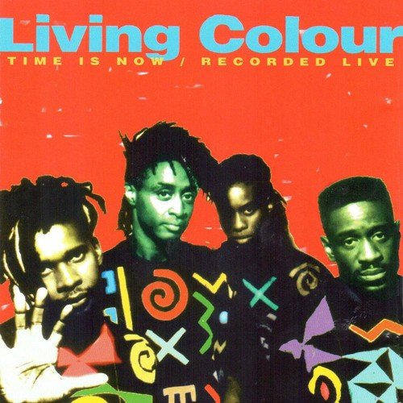
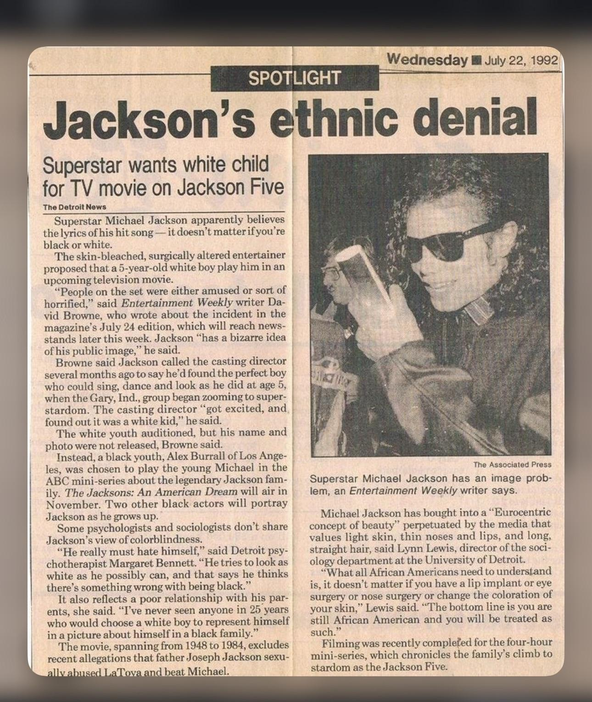

Truth sounds different depending on who is speaking.
Across five songs, we will explore how artists use language, perspective, sound and production to shape an audience's understanding of truth. Each song asks us to question the story we are being told — and our own willingness to believe it.
Sympathy for the Devil
The Rolling Stones
Can we trust the person telling the story?
Don't Believe the Hype
Public Enemy
Who decides what we believe?

Cult of Personality
Living Colour
Why do we believe powerful people?

Tabloid Junkie
Michael Jackson
Does repetition make something true?
Idioteque
Radiohead
What happens when reality becomes overwhelming?